① 新南万博が始まった経緯
- 新南万博は、地域の課題を中学生の探究学習とつなげ、学校の学びを社会実装へ広げるために始まった
- 令和7年度はその入口として、地域企業である庄東ノーサンのスプラウト生産を題材にした
- 生徒が地域の仕事や課題を自分ごととして捉えることが、この年度の出発点だった
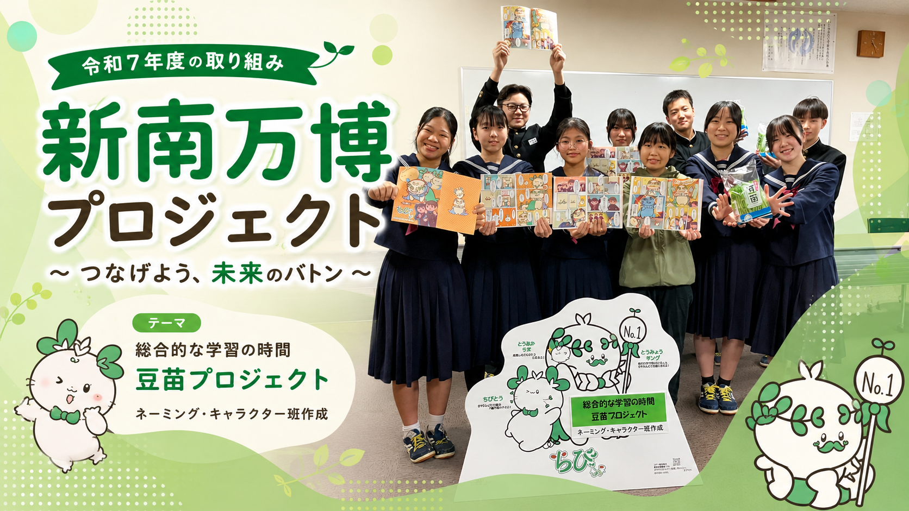
Reiwa 7 / 2025
規格外になってしまうスプラウトを、価値ある商品へ。 新湊南部中学校の生徒たちが、有限会社庄東ノーサンの現場理解を起点に、 商品名、キャラクター、漫画、販促、販売までを一連で考えた 地域連携型のスプラウト探究プロジェクトです。
Story Line
令和7年度の取り組みは、ただ商品をつくった話ではなく、 新南万博が始まった背景から、現場で見えた課題、表現づくり、 商品化と販売、そして生徒たちの学びまでが連続した探究でした。
Story
生徒たちは、現場で見えた課題を受け止めるだけでなく、 伝え方を考え、商品として世の中に出し、最後に自分たちの学びとして振り返るところまで進みました。
2025年9月には豆苗プロジェクトのキャラクターが決定し、豆苗のよさを親しみやすく伝える存在として活用された。
キャラクターだけでなく、絵本や漫画のような伝達物づくりにも取り組み、規格外豆苗の背景や魅力を分かりやすく伝える工夫を重ねた。
「どうすれば手に取ってもらえるか」を考えながら、課題を前向きな物語へ変える広報の視点を学んだ。
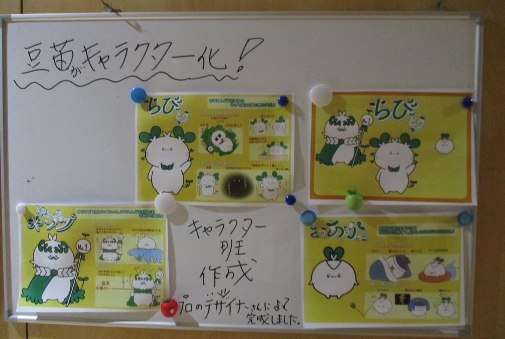
生徒が考えたキャラクター案が可視化され、豆苗の魅力を伝える表現づくりが重視されていたことが分かります。
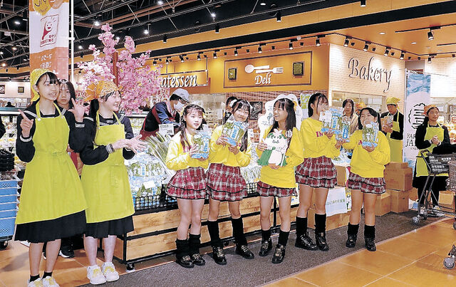
学校の学びが売り場へ持ち出され、生徒と地域タレントが一緒に価値を伝える実装段階まで進んだことを示す写真です。
News Coverage
令和7年度の取り組みは、キャラクター発表、漫画制作、商品化、販売実践まで、 各段階で複数の新聞に取り上げられました。地域の中でどのように認知が広がっていったかを、 報道の流れから見ることができます。
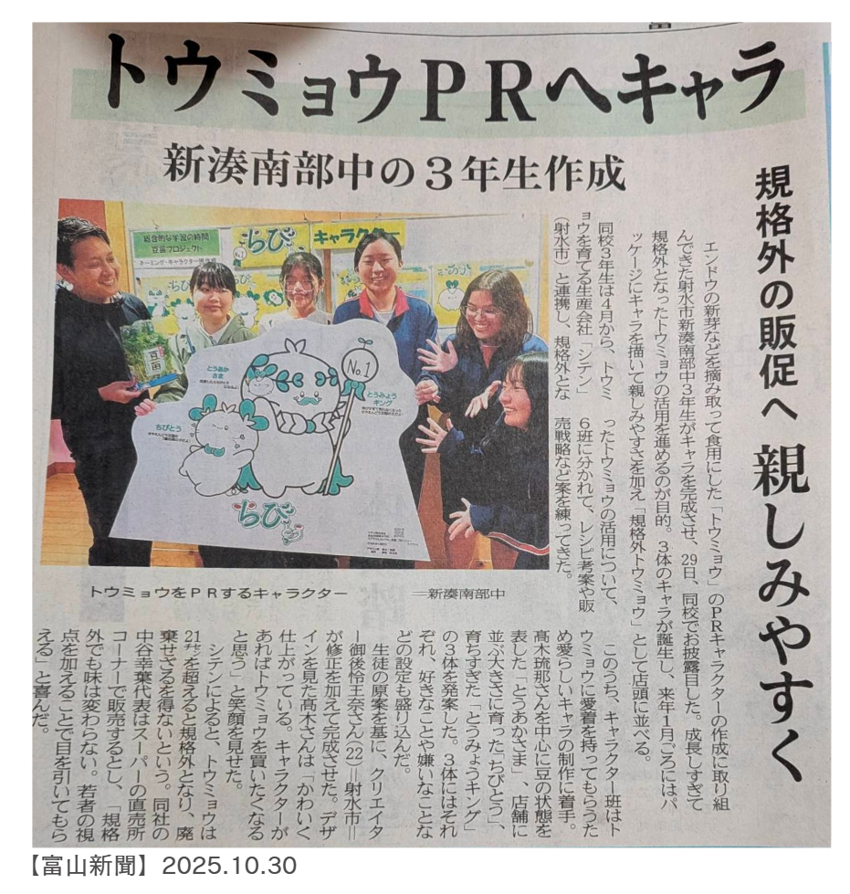
「トウミョウPRへキャラ」。規格外豆苗を親しみやすく伝えるキャラクターづくりが報じられました。
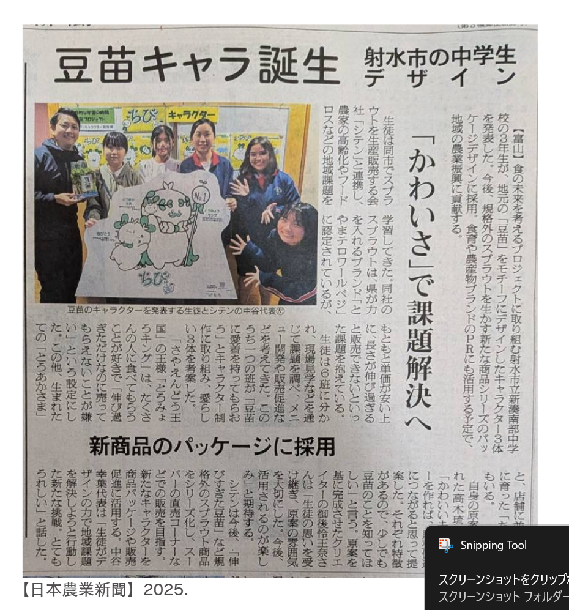
「豆苗キャラ誕生」。中学生のデザインが商品パッケージに採用され、課題解決へつながる取り組みとして紹介されました。
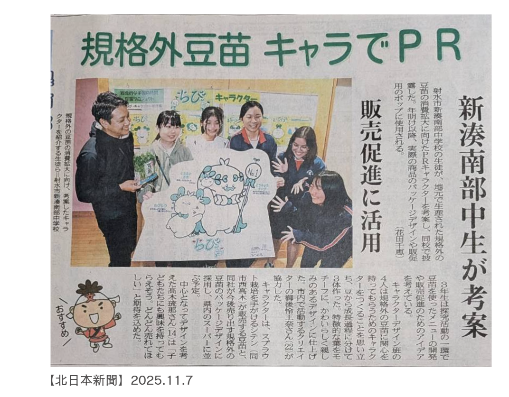
「規格外豆苗 キャラでPR」。販売促進へ向けて、生徒が考案したキャラクターの活用が伝えられました。
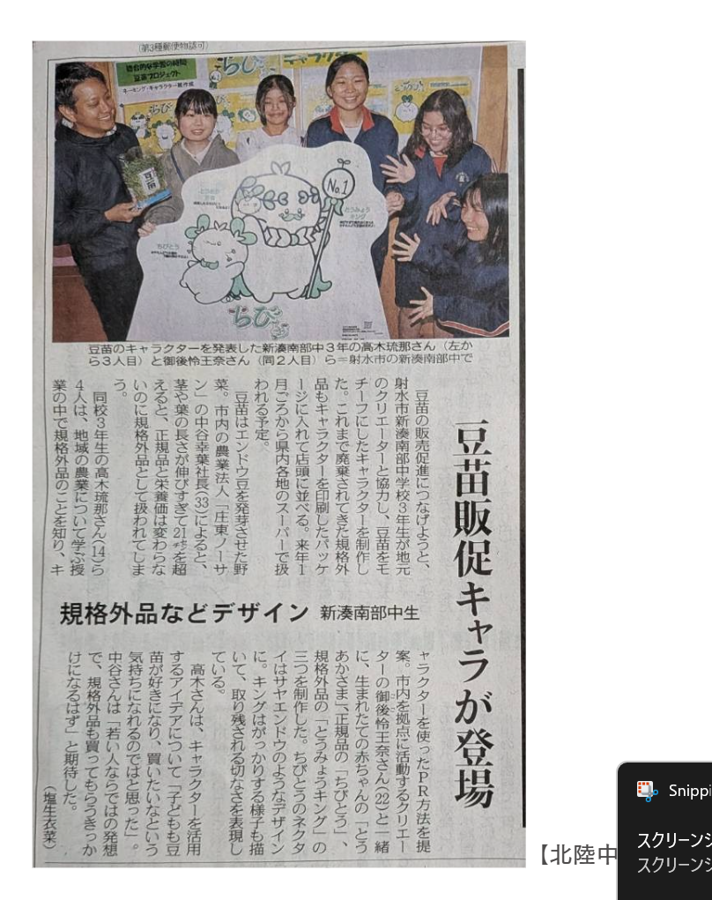
「豆苗販促キャラが登場」。規格外品の魅力を伝える新しい顔として、豆苗キャラクターの誕生が紹介されました。
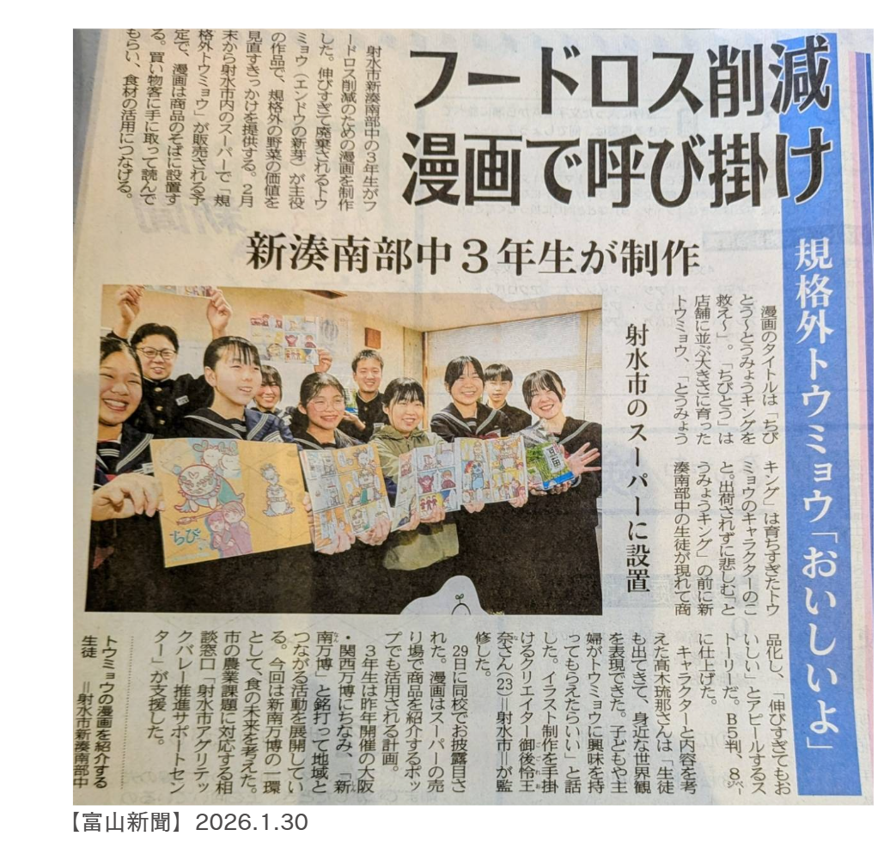
「フードロス削減 漫画で呼び掛け」。規格外豆苗の背景や魅力を、漫画という形で伝える試みが報じられました。
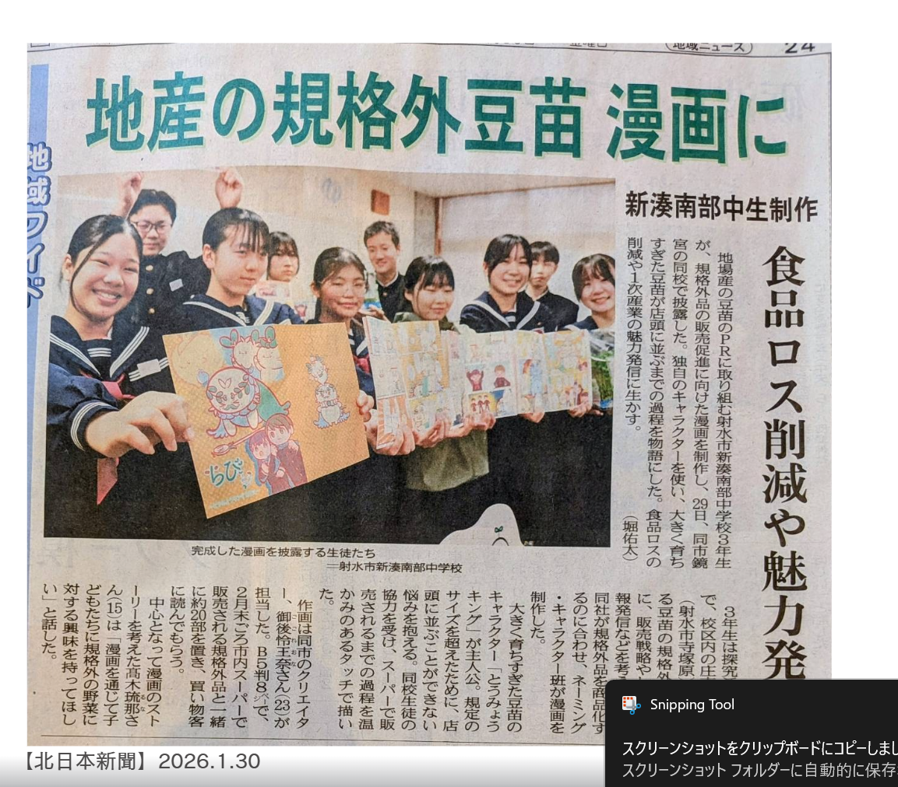
「地産の規格外豆苗 漫画に」。食品ロス削減と魅力発信を両立する表現づくりとして取り上げられました。
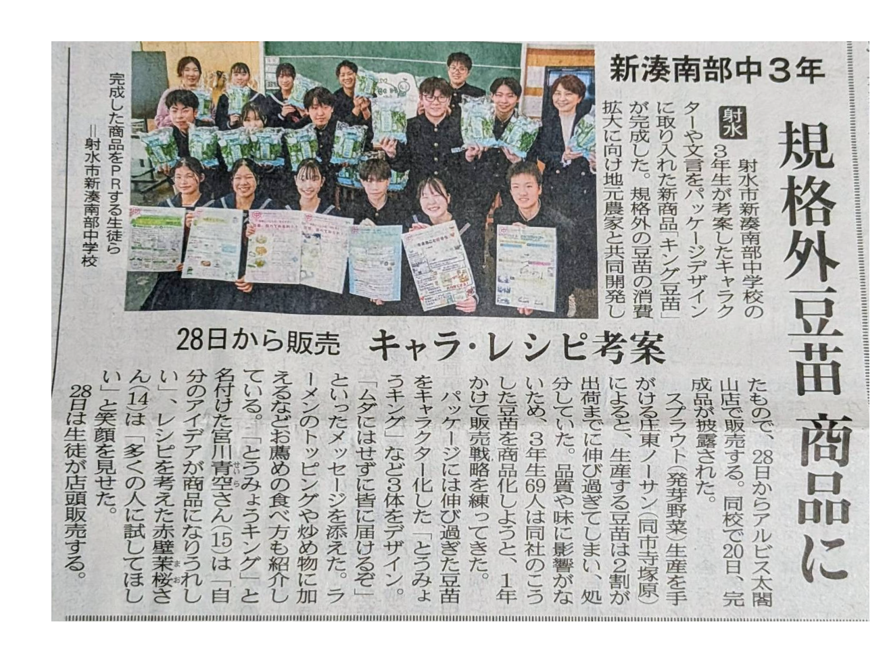
キャラクターやレシピ案を取り入れた「キング豆苗」の完成が伝えられ、販売前の期待感が高まりました。
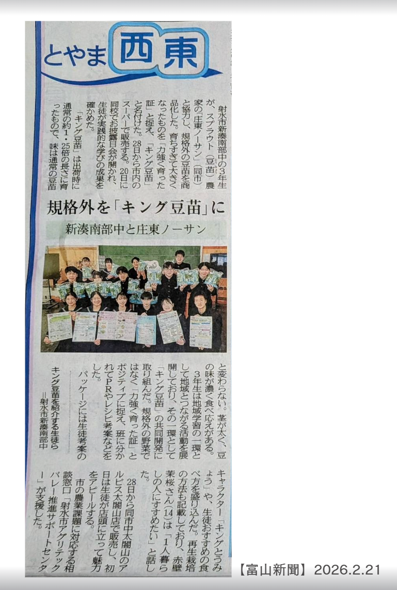
「規格外を『キング豆苗』に」。規格外品を前向きな商品価値へ転換した点が、地域連携の成果として紹介されました。
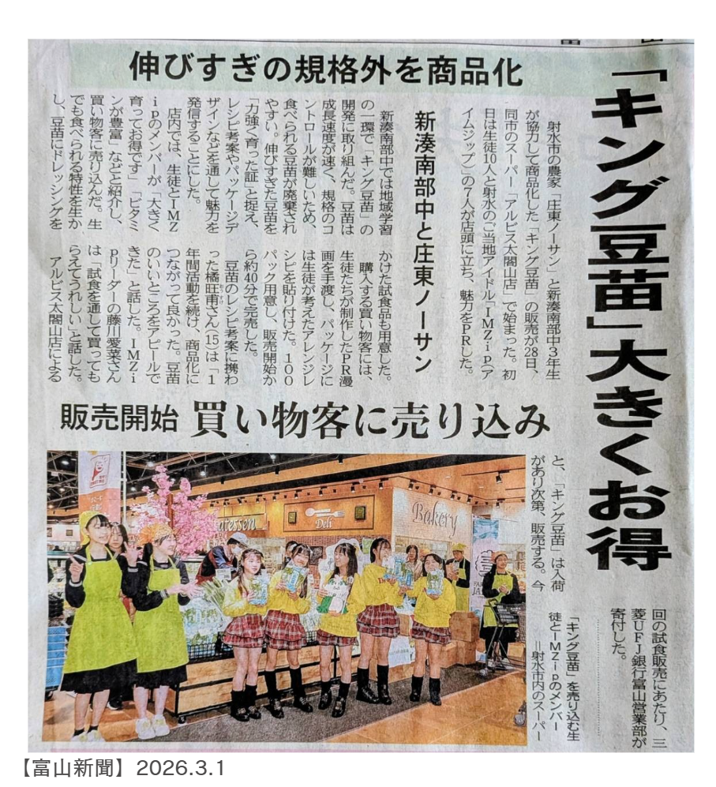
「キング豆苗 大きくお得」。店頭販売の様子と、買い物客へ直接魅力を伝える実践が大きく報じられました。
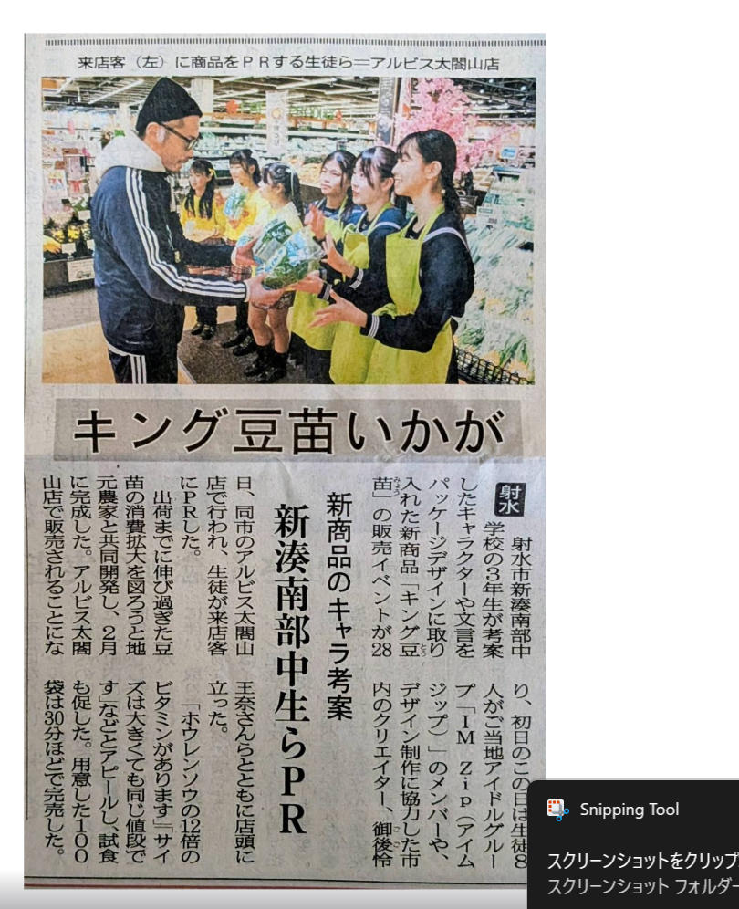
アルビス店頭でのPR活動が記事化され、生徒たちが自ら売り場に立って伝える姿が地域へ共有されました。
Highlights